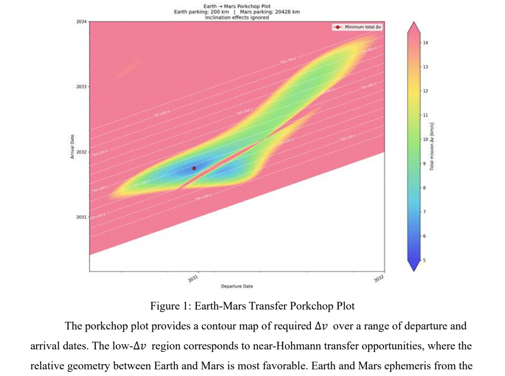
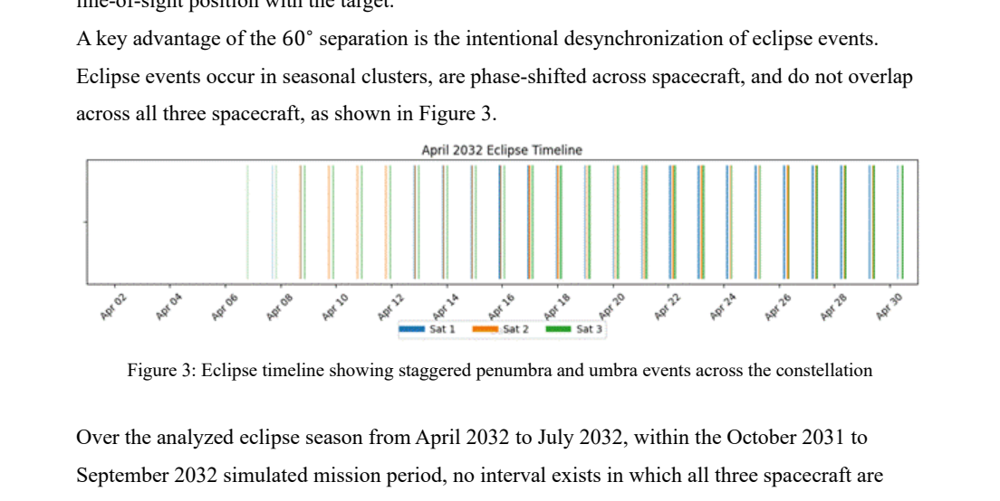
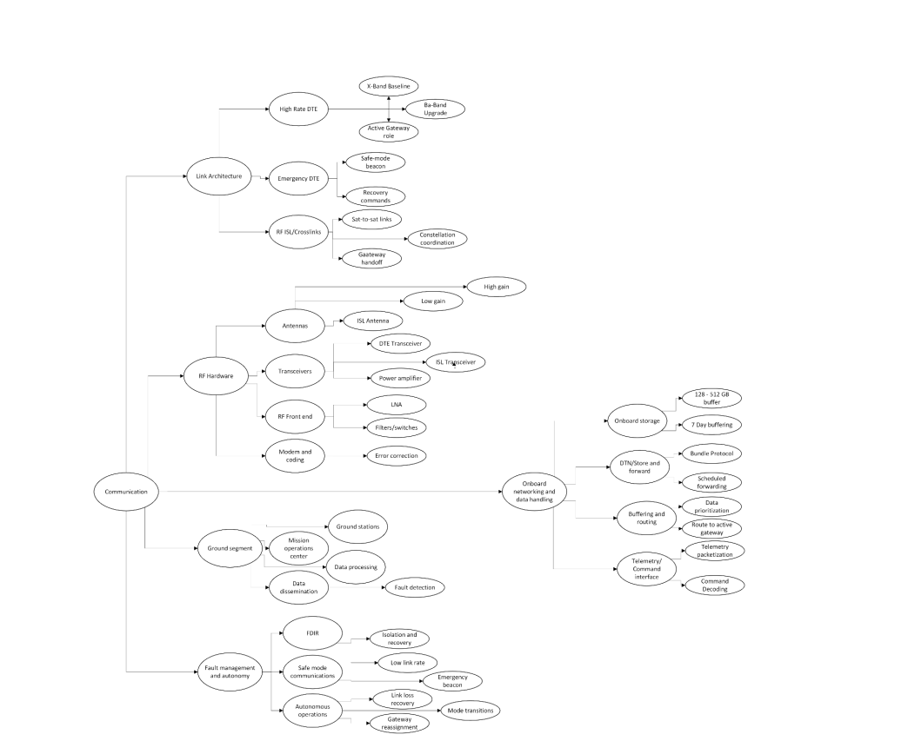

A full systems engineering concept for an orbital solar augmentation mission at Mars — three spacecraft in Mars-synchronous orbit, each deploying a 200-meter reflector to redirect sunlight to the Martian surface, designed within a hard $1.5 billion budget constraint.
The Problem with Power on Mars
At 1.52 AU, Mars receives only ~43% of Earth’s solar flux — roughly 590 W/m² at the top of the atmosphere, reduced further by dust, atmospheric scattering, and seasonal variation. During regional dust storms, surface solar flux can drop by more than 50%. This low and unpredictable energy environment has ended real missions: dust accumulation on solar arrays was a primary factor in the loss of the Opportunity rover.
Surface power systems respond to this by over-sizing arrays, adding battery storage, and designing conservatively around worst-case conditions. PROMETHEUS reframes the problem: instead of fighting the energy environment from the surface, shift energy control to orbit. Reflective spacecraft intercept solar radiation and redirect it to target regions with controlled timing, turning an uncontrollable passive resource into a managed system input.
Mission Concept
The PROMETHEUS constellation consists of three to four identical spacecraft in Mars-synchronous orbit — a circular equatorial orbit whose period matches Mars’ sidereal rotation of ~24.6 hours. Each spacecraft carries a deployable thin-film reflector approximately 200 meters in diameter (~31,400 m² effective area), made from aluminized Kapton chosen for its mass efficiency, reflectivity, and material heritage.
The reflectors redirect solar radiation to target regions near Elysium Planitia, raising local surface irradiance from ~590 W/m² to ~800 W/m² — a net augmentation of +210 W/m². Energy is distributed across a broad footprint rather than concentrated, maintaining thermally safe flux levels while meaningfully improving photovoltaic output, thermal stability, and the energy available for in-situ resource utilization (ISRU).
Orbital Design
Mars-synchronous orbit is the mission’s fundamental enabling choice. At the synchronous altitude of ~17,032 km, the spacecraft’s orbital period equals Mars’ rotation period, maintaining a fixed longitudinal ground track over the target region without continuous retargeting. This dramatically reduces attitude control complexity and enables stable, long-duration illumination.
The three spacecraft are phased 60° apart in the same equatorial plane. One spacecraft is directly above the target (elevation angle E = 90°); the two offset spacecraft maintain E = 21.07°, keeping all three well above the horizon at all times for uninterrupted surface visibility. This phasing also staggers eclipse events across the constellation, ensuring at least one spacecraft remains illuminated at all times.
Mars’ non-spherical gravity field and solar radiation pressure (amplified by the large reflector area-to-mass ratio) create significant perturbative forces. Without active station-keeping, the semi-major axis drifts, accumulating into longitude error at the surface. Station-keeping Δv requirements were estimated at 10–70 m/s per spacecraft per year, managed through ionic thrusters selected for their high specific impulse over the multi-year mission lifetime.
Trajectory & Transfer
Earth–Mars launch opportunities occur approximately every 780 days when planetary geometry allows minimum-energy transfers. The team used a porkchop plot — a contour map of required Δv over a range of departure and arrival dates — to identify the optimal transfer window. Earth and Mars ephemeris data from the Spiceypy Python library were used to generate the plot.
The selected trajectory follows a near-Hohmann path: departure December 2030, Mars arrival October 2031, with a time of flight of 283 days and a total Δv of ~6.5 km/s. After arrival, the spacecraft performs a Mars orbit insertion burn to achieve initial capture, followed by a series of orbit-raising maneuvers to reach the Mars-synchronous altitude — one of the highest Δv events of the mission.

Eclipse & Coverage Analysis
At Mars-synchronous altitude, eclipse durations depend on orbital geometry relative to the Sun. The team computed eclipse timelines for a simulated mission window (April 2032 – July 2032), confirming that penumbra and umbra events are staggered across the three spacecraft and do not overlap. No period exists during the analyzed window where all three spacecraft are simultaneously in umbra, meaning the surface target is never without illumination coverage.
Eclipse events drive battery sizing on each spacecraft: the critical eclipse load (avionics + ADCS + thermal heaters, ~330 W) determines the minimum battery capacity, independent of mission power generation requirements. Eclipse analysis was therefore a direct input to the power subsystem sizing.

My Contribution — Communications
I owned the communications subsystem, which had to solve a harder problem than raw link performance: how do you operate a constellation autonomously when every command takes 4–24 minutes to arrive and the Deep Space Network is a shared, scheduled resource?
I evaluated four architectures (DTE-only, relay-only, hybrid, and hybrid + RF ISL) against availability, fault resiliency, DSN efficiency, and power cost. The selected architecture uses RF inter-satellite crosslinks so non-gateway spacecraft forward data to one active gateway, which performs the scheduled high-rate DSN downlink. Every spacecraft keeps an independent low-rate emergency beacon for safe-mode recovery. Onboard store-and-forward (DTN) buffers up to 7 days of data to survive missed contacts and solar conjunction blackouts.

Outcome
- Produced a full mission concept report covering trajectory design, orbital mechanics, constellation geometry, subsystem architecture, and a $1.05–$1.21B cost estimate against the $1.5B constraint.
- Confirmed that a 3-spacecraft Mars-synchronous constellation at 17,032 km provides near-continuous surface coverage with staggered eclipse events and 10–70 m/s/yr station-keeping margins.
- Selected a near-Hohmann 2030–2031 transfer window via porkchop analysis, closing the trajectory with a total Δv of ~6.5 km/s.
- Designed the communications subsystem architecture, requirements flow-down, and autonomous operations concept for a constellation operating under 4–24 minute one-way light-time delays.
What I Learned
- Orbital design is never just an astrodynamics problem — the choice of Mars-synchronous orbit directly shaped every other subsystem’s requirements, from pointing accuracy to station-keeping Δv to eclipse battery sizing.
- Constraint-driven design sharpens decisions. The $1.5B ceiling forced real trade-offs between constellation size, reflector scale, and subsystem complexity that wouldn’t have existed in an unconstrained exercise.
- Perturbative forces at Mars (non-spherical gravity + solar radiation pressure on a 200 m reflector) are large enough to dominate station-keeping design — the reflector and the orbit are coupled systems, not independent ones.
- Multi-disciplinary integration is where concept missions succeed or fail. Power, ADCS, comms, and the reflector payload all feed into each other, and tracking those dependencies across a team is as much an engineering challenge as any individual subsystem.